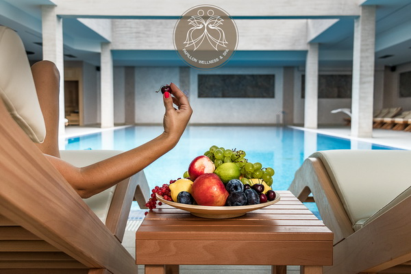

Centar za wellness je prostor dizajniran da podržava holističko blagostanje pojedinca, fizičko, mentalno i emocionalno. Ovi centri nude raznolike usluge i aktivnosti koje pomažu ljudima da postignu ravnotežu i osećaju se optimalno. Evo nekoliko ključnih elemenata koje obično možeš pronaći u centru za wellness: Spa tretmani: To uključuje masaže, tretmane lica, tretmane tela, parne kupke, saune, hidroterapiju i druge tretmane koji opuštaju mišiće, poboljšavaju cirkulaciju i čiste kožu. Fitness programi: Centri za wellness obično nude teretane sa modernom opremom, kao i razne fitness programe kao što su joga, pilates, grupne vežbe, kardio trening, i druge aktivnosti koje poboljšavaju kondiciju i fleksibilnost. Wellness tretmani: To mogu biti tretmani poput akupunkture, akupresure, kiropraktike, holističke terapije, refleksologije, i drugih alternativnih terapija koje podržavaju opšte zdravlje i dobrobit. Zdrava ishrana: Centri za wellness često imaju restorane ili kafee koji nude zdrave obroke, sokove, smoothie-je, organske namirnice i druge nutritivne opcije koje podržavaju zdravu ishranu. Edukacija i savetovanje: Mnogi wellness centri nude i edukativne programe, radionice, seminare i individualno savetovanje o zdravom načinu života, ishrani, mentalnom zdravlju i drugim aspektima wellnessa. Relaksacijski prostori: Ovi centri često imaju prostore za opuštanje kao što su tihi prostori za meditaciju, prostori za relaksaciju, vrtovi, fontane ili druge prirodne elemente koji stvaraju mirnu atmosferu. Programi za poboljšanje mentalnog zdravlja: To može uključivati grupne sesije za smanjenje stresa, mindfulness prakse, terapiju razgovorom, ili druge metode koje pomažu u upravljanju stresom i poboljšavaju mentalno blagostanje.
